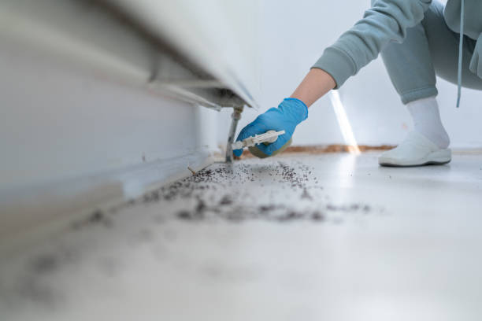

Wanatah Indiana
info@pemdempestcontrol.xyz
Wanatah Indiana
info@pemdempestcontrol.xyz

Professional pest control in Wanatah Indiana . Our licensed technicians provide tailored pest management solutions, ensuring long-term protection for your home or business. Get a free inspection and quote today.
Click Here To Call Us (877) 848-1711Are you struggling with pests in Wanatah Indiana ? Pemdem Pest Control is here to help you regain control of your home or business. We specialize in eliminating a wide range of pests, including termites, rodents, ants, bed bugs, and more, using safe and effective methods tailored to your unique situation.
At Pemdem Pest Control, we understand the importance of a pest-free environment. Pests can cause significant damage to your property, pose health risks, and disrupt your daily life. That’s why our expert technicians are equipped with the latest tools and techniques to quickly and efficiently eliminate any infestation. We offer both residential and commercial pest control services in Wanatah Indiana ensuring that your property remains protected year-round.
Our approach to pest control is both thorough and environmentally responsible. We use eco-friendly products that are safe for your family, pets, and the environment. Our services include a detailed inspection, customized treatment plans, and ongoing monitoring to prevent future infestations. Whether you’re dealing with a current problem or looking to safeguard your property from potential threats, we have the expertise to deliver results.
Don’t let pests take over your property in Wanatah Indiana . Contact Pemdem Pest Control today for a free inspection and discover why we are the trusted choice for pest control in the area. Your satisfaction is our top priority, and we are committed to providing you with the highest quality service. Protect your home or business with our reliable and professional pest control solutions.
Residential & commercial Pest Control
Quality services at affordable prices
Immediate 24/ 7 emergency services


Identifying a pest infestation early can prevent significant damage and discomfort in your home. At Pemdem Pest Control, we understand how crucial it is for homeowners in Wanatah Indiana to recognize the signs of an infestation promptly. Here’s what you need to look out for:
Unusual Noises
One of the first indicators of a pest problem is unusual noises. Scratching, scurrying, or buzzing sounds, particularly at night, can suggest the presence of pests like rodents or insects within your walls or attic.
Visible Droppings
Pest droppings are another clear sign of an infestation. Rodents, cockroaches, and other pests leave behind droppings that can vary in size and shape. Finding these droppings near food sources, in cupboards, or along baseboards is a strong indicator of a problem.
Signs of Damage
Inspect your home for signs of damage caused by pests. Chewed wires, gnawed wood, or small holes in walls or floors can indicate an infestation. Termites, in particular, can cause significant structural damage if left unchecked.
Strange Smells
A musty or unpleasant odor, especially if accompanied by visible mold or mildew, can be a sign of pest activity. This is often associated with infestations of rodents or larger insects, which may contribute to a deteriorating environment.
Visible Pests
Lastly, seeing pests themselves, whether crawling insects, flying bugs, or rodents, is a direct sign of an infestation. Early detection and treatment are crucial to prevent further problems.
If you suspect a pest infestation in Wanatah Indiana Pemdem Pest Control is here to help. Contact us today for a thorough inspection and effective pest control solutions to keep your home safe and comfortable.
Residential & commercial Pest Control
Quality services at affordable prices
Immediate 24/ 7 emergency services
Bees play an essential role in our ecosystem; however, when they invade your property, they can become a concern. Our bee control services are designed to address bee-related issues while respecting their importance to the environment. At Pest Control, our team is trained in humane bee relocation methods that preserve the hive while keeping homeowners safe. If necessary, we can also provide preventative measures to discourage bees from nesting in undesirable areas in the future. Choosing us means partnering with a company that values safety and environmental responsibility in pest control.

Preventing pests before they become a problem is the best approach to maintaining a pest-free environment. Our pest prevention services involve regular inspections and proactive treatments designed to eliminate potential pest breeding grounds. At Pest Control, we create customized prevention plans based on your specific needs and property conditions. Our expert technicians educate you about the pests that are commonly found and the measures you can take to avoid infestations. With ongoing support and preventative strategies, you can trust us to help keep your home or business pest-free all year round.

Quality pest control shouldn’t come at a premium. At Pest Control, we provide affordable pest control solutions without sacrificing effectiveness or safety. Our transparent pricing structure ensures you understand the costs involved, and we work with you to create a customized plan that meets your needs and budget. With our team of skilled professionals, you’re guaranteed exceptional service, proven methods, and reliable results. Opt for our affordable pest control services and experience superior pest management that doesn’t break the bank.

If your property is being invaded by wildlife such as raccoons, squirrels, or deer, our wildlife control services provide humane and effective solutions. Our team understands the local wildlife and implements strategies to safely remove them and prevent future incursions. We believe in ethical wildlife management, ensuring that both your safety and the welfare of the animals are taken into consideration. Choose us for responsible wildlife control.

Long-term pest control requires a comprehensive approach tailored to your specific situation. Our pest management programs in Wanatah Indiana focus on prevention, monitoring, and control strategies designed to keep your property pest-free year-round. At Pest Control, we work with you to develop and implement a pest management plan that addresses your unique needs, from initial assessments to regular treatments. Our qualified technicians utilize the latest techniques and tools to ensure the effective management of pest populations. Your satisfaction is our priority, and with our dedicated support, you can feel confident in the safety and comfort of your space.
When you need pest control services, finding a local exterminator is essential. At Pest Control, we pride ourselves on being the go-to pest control provider . Our team is familiar with the local pest issues and climate patterns, allowing us to deploy the most effective strategies for your unique situation. We prioritize community engagement and customer satisfaction, ensuring you receive prompt, reliable service from a local team that understands your needs. Choosing a local exterminator means choosing a partner in pest management who cares about the well-being of your property.

Your home deserves the best protection against pests. Our home pest control services are designed to create a safe and comfortable living space for you and your family. At Pest Control, we offer comprehensive pest control solutions that include inspections, treatments, and preventative care. Our trained professionals use safe and effective methods tailored to your home’s specific needs, ensuring thorough pest eradication and prevention. By choosing us, you’re selecting a dedicated team that prioritizes the health and safety of your family while providing outstanding customer service. Let us help you maintain a pest-free home today.

Pests can threaten your business’s operations, reputation, and profitability. At Pest Control, we provide tailored pest control services designed specifically for businesses in Wanatah Indiana . Our experienced team understands the unique challenges faced by various industries and ensures compliance with health and safety regulations. From restaurants to warehouses, we implement effective pest management strategies that minimize disruptions and protect your business. Count on us for reliable pest control solutions that align with your business goals .
Years Experience
Expert Technicians
Satisfied Clients
Compleate Projects
At Pemdem Pest Control, we know that dealing with pests can be both stressful and disruptive. That's why we are dedicated to providing top-notch pest control services across Wanatah Indiana . Our commitment to quality and customer satisfaction is what makes us stand out in the industry.
Our team of licensed and highly trained technicians is equipped with the latest tools and techniques to tackle any pest issue you might be facing. Whether it’s termites, rodents, bed bugs, or any other pest, we have the expertise to manage it effectively. We tailor our solutions to meet your specific needs, ensuring that you receive the most efficient and durable results.
We prioritize the safety of your family, pets, and the environment by using eco-friendly products and methods. Pemdem Pest Control is committed to minimizing environmental impact while delivering powerful pest management solutions that are both safe and effective.
Our services include comprehensive inspections, customized treatment plans, and ongoing monitoring to prevent future infestations. We don’t just address the immediate problem; we work to ensure that your property remains protected from pests in the long term.
Customer satisfaction is at the heart of what we do. We provide prompt, reliable service and are always available to answer your questions and address any concerns you may have. At Pemdem Pest Control, we strive to offer the best possible experience and results.
Choose Pemdem Pest Control in Wanatah Indiana for effective, eco-friendly, and customer-focused pest management solutions. Contact us today to schedule your free inspection and take the first step toward a pest-free environment.
When home or business owners are faced with unwanted pests, they often search for pest control near me to find local solutions. At Pest Control, we understand the urgency of pest problems and pride ourselves on providing prompt, effective services tailored to every unique situation. Our team of experienced exterminators employs advanced techniques and eco-friendly products, ensuring that your pest issues are resolved quickly and safely. Choosing us means selecting reliability, expertise, and a commitment to customer satisfaction.
Termites can cause devastating damage to your property if left untreated. Our expert termite control services in Wanatah Indiana are designed to effectively eradicate these destructive pests before they can wreak havoc on your home or business. We use advanced techniques and eco-friendly products to ensure that your space remains protected. Our certified specialists conduct thorough inspections and provide customized treatment plans. Trust us to safeguard your property and provide peace of mind.
Rodents, such as rats and mice, are more than just a nuisance; they can pose serious health risks and cause damage to your property. Our rodent control services are comprehensive and tailored to your specific needs. We begin with a detailed inspection to identify entry points and breeding grounds, followed by targeted baiting and trapping strategies. Our trained professionals at Pest Control are well-versed in rodent behavior and use effective methods that not only eliminate current infestations but also prevent future occurrences. We take pride in our local knowledge and understanding of the pest landscape in Wanatah Indiana . By choosing us for your rodent control needs, you can enjoy peace of mind knowing that we approach every situation with a focus on safety and efficiency.
Bed bugs are notorious for their ability to hide in tiny crevices and for their frustrating tendency to multiply quickly. If you’re waking up with bites or noticing small stains on your bedding, it’s time to call a professional bed bug exterminator. At Pest Control, we specialize in bed bug removal . Our approach starts with a thorough inspection followed by the use of state-of-the-art heat treatments and chemical applications that effectively eliminate these pests at all life stages. We understand the distress that a bed bug infestation can cause; therefore, our discreet and respectful services ensure your comfort throughout the eradication process. Trust us to restore your home to a safe, bed-bug-free environment.
Ant colonies can infiltrate homes and businesses, creating nuisances and health risks. Pest Control specializes in effective ant extermination services that target various species, including fire ants, carpenter ants, and sugar ants. Our method involves identifying ant pathways, nesting sites, and using appropriate treatments that eliminate ants at the source. Our trained professionals are dedicated to ensuring long-term solutions, so you won’t face recurring infestations. When you choose us, you’re choosing a team that stands by their commitment to customer satisfaction, environmental stewardship, and effective pest management .
Cockroaches are not only unpleasant but can also pose health risks. Our cockroach extermination services in Wanatah Indiana are efficient and targeted, using the latest technology and methods to eradicate these pests from your property. We conduct detailed inspections, finding the root of the infestation and treating accordingly. Our focus on safety and effectiveness ensures that you can live worry-free. Partner with us for a cleaner and healthier environment.
Protecting your home from pests is vital for your family's health and safety. Our residential pest control services are designed to provide comprehensive coverage against various pests, including spiders, termites, and rodents. We create a tailored pest management program that fits your needs, utilizing eco-friendly solutions to ensure the safety of your loved ones and pets. With a commitment to quality and service, we are your trusted partners in maintaining a pest-free home.
For businesses maintaining a pest-free environment is crucial for reputation and compliance. Our commercial pest control services are tailored to various industries, including food services, healthcare, and retail. Pest Control understands that each business has unique needs, which is why we provide customized solutions that reduce pest-related risks while ensuring minimal disruption to your operations. Our experienced technicians use safe methods that comply with health regulations while delivering effective results. Rely on us as your partner in proactive pest management and keep your commercial space pest-free.
Are you looking for safe and effective pest control solutions? Our organic pest control services in Wanatah Indiana offer an eco-friendly approach to managing infestations. We use natural products that are scientifically proven to be effective against pests while preserving the integrity of your environment. Our skilled technicians are knowledgeable about organic methods, ensuring you get gold-standard treatment without harmful chemicals. Our focus on sustainability means you can confidently protect your home or business from pests while being kind to the planet. Choose Pest Control for innovative pest management that prioritizes your health and the health of our ecosystem.
The presence of mosquitoes can turn your outdoor spaces into no-fly zones. Our mosquito control services are designed to make your yard enjoyable again. At Pest Control, we employ a multi-faceted approach to mosquito management, which includes inspections, treatments, and ongoing monitoring. Our trained professionals use the latest techniques, such as barrier sprays and larvicides, to eliminate mosquitoes at all life stages. Enjoy your summer evenings without the constant threat of bites by partnering with us to create a mosquito-free environment. With our commitment to quality and customer satisfaction, we take the time to ensure every treatment is tailored to your property’s specific needs.
Dealing with fleas can be frustrating, especially if you have pets in your home. These pesky insects can cause discomfort for both your family and your pets. Our flea exterminator services are comprehensive and focus on both treating current infestations and preventing future occurrences. At Pest Control, we utilize advanced techniques and products that are safe and effective for your home. We start with a detailed inspection to identify areas where fleas are likely to breed and hide, followed by targeted treatments that eliminate fleas at every stage of their lifecycle. With our expertise, you can rest assured that your home will become a flea-free zone.
While some spiders are harmless, others can pose a threat to your home and health. Our spider extermination services in Wanatah Indiana are designed to identify and eliminate spider populations in and around your home. At Pest Control, we focus on understanding the types of spiders and their habitats to target our treatments effectively. Our pest control experts use safe and effective methods tailored to your specific needs. We also educate our clients on preventative measures to help reduce the likelihood of spider infestations in the future. Choosing us means getting a comprehensive solution for all your spider-related concerns while ensuring your home remains comfortable and safe.
More homeowners and businesses are looking for eco-friendly solutions to pest management. Our eco-friendly pest control services focus on eliminating pests without harming the environment. At Pest Control, we are committed to sustainable practices that minimize the use of chemical pesticides. We employ integrated pest management techniques that include monitoring, habitat modification, and the use of natural predators. Our team is trained in the most effective eco-friendly products and methods, ensuring that you can protect your property and still care for the planet. With us, you’ll receive professional pest control that aligns with your values.
Choosing the right pest control company is crucial for effective pest management. At Pest Control, we pride ourselves on being among the best pest control companies . Our reputation is built on a foundation of customer satisfaction, effective treatments, exceptional service, and professional integrity. Our team consists of licensed and trained professionals who stay updated with the latest pest control techniques and technologies. We are committed to transparency, providing detailed explanations of our methods and tailored plans. When you choose us, you choose a reliable partner dedicated to safeguarding your home and business from pests.
Pest problems can arise at any time, often unexpectedly. This is why our emergency pest control services in Wanatah Indiana are here to provide immediate assistance when you need it most. At Pest Control, we understand the urgency of certain pest situations, which is why we offer 24/7 emergency services. Whether it’s a sudden infestation of bees, wasps, or rodents, our team is prepared to respond quickly and effectively. We pride ourselves on our quick response times, professional service, and comprehensive pest management solutions designed to restore your home or business to safety in no time. Trust us to be there when you need help the most.
Regular pest inspections are essential for early detection and effective management of pest problems before they escalate. At Pest Control, we offer comprehensive pest inspection services conducted by trained professionals who thoroughly evaluate your property for signs of infestation. We utilize advanced inspection techniques and tools to ensure no stone is left unturned. Following the inspection, we provide a detailed report and recommend suitable treatments to tackle any identified issues. Choosing us means you're taking a proactive approach to pest management and safeguarding your property .
Wasps can pose a serious danger, especially for those allergic to their stings. Our wasp removal services focus on safe and efficient removal strategies while ensuring that your home or business remains safe from future invasions. Our trained specialists use proper protective equipment and methods to remove nests and prevent re-establishment. Choose us for effective wasp control that prioritizes your safety.
After a professional pest control treatment, it's important to follow certain steps to ensure the effectiveness of the treatment and maintain a pest-free environment. At Pemdem Pest Control, serving Wanatah Indiana we provide expert advice to help you manage your space effectively post-treatment.
Follow Safety Instructions
Your pest control technician will provide specific safety instructions, including when it’s safe to re-enter treated areas. Follow these guidelines carefully to avoid any health risks. In many cases, you'll need to stay out of the treated areas for a specified period to allow the treatment to fully take effect.
Avoid Cleaning Immediately
Refrain from cleaning or wiping down surfaces immediately after treatment. This can interfere with the effectiveness of the pesticides or treatments used. Typically, you should wait at least 24-48 hours before resuming normal cleaning routines. However, always follow the specific instructions provided by your pest control professional.
Monitor for Continued Activity
Keep an eye out for any remaining pest activity or signs of new infestations. If you notice pests or signs of a problem within the follow-up period suggested by your technician, contact Pemdem Pest Control immediately for additional treatment or advice.
Maintain Preventive Measures
To prevent future infestations, continue practicing good sanitation and maintenance habits. Seal cracks, keep food stored properly, and address any moisture issues that might attract pests.
Dispose of Contaminated Materials
If pests were present in areas with food or other sensitive materials, dispose of or clean these items according to the advice given by your pest control provider. This helps ensure that any residual pests or contaminants are effectively removed.
For comprehensive pest control services and expert advice in Wanatah Indiana trust Pemdem Pest Control. Contact us today to ensure your home remains pest-free and safe after treatment!
Wanatah is a town in LaPorte County, Indiana, United States. The population was 1,048 at the 2010 census.
Yes, Pemdem Pest Control specializes in bed bug extermination services in Wanatah Indiana using effective treatments to eliminate bed bugs from your home.
Pemdem Pest Control offers a warranty on most pest control services in Wanatah Indiana ensuring that if pests return within the warranty period, we’ll re-treat at no extra cost.
To prevent pests from returning in Wanatah Indiana Pemdem Pest Control recommends sealing entry points, keeping food sealed, and maintaining a clean environment.
Pest control is effective year-round but spring and summer are peak seasons for pests. Pemdem Pest Control offers services to protect your home in every season.
Yes, Pemdem Pest Control provides tailored pest control services for restaurants and other food service establishments to ensure compliance and safety.
Yes, Pemdem Pest Control provides same-day pest control services subject to availability. Call us to schedule an appointment.
Yes, Pemdem Pest Control provides commercial pest control services helping businesses maintain a pest-free environment.
Scheduling a pest control service with Pemdem Pest Control is easy. You can contact us via phone, email, or book directly through our website.
Pemdem Pest Control uses a combination of liquid treatments and baiting systems to eliminate and prevent termite infestations .
Yes, Pemdem Pest Control offers bundled pest control services in Wanatah Indiana to address multiple pest issues in one visit for added convenience and savings.
You should start seeing results within a few days of Pemdem Pest Control’s treatment but it may take longer for full elimination depending on the pest.
Yes, Pemdem Pest Control uses safe, targeted treatments that won’t harm your garden or outdoor plants.
Yes, Pemdem Pest Control offers a satisfaction guarantee on our pest control services in Wanatah Indiana . If pests return, we will come back at no extra charge.
Yes, Pemdem Pest Control offers recurring pest control services in Wanatah Indiana to keep your home or business free from pests year-round.
Pemdem Pest Control handles a wide range of pests including ants, termites, bed bugs, rodents, spiders, cockroaches, and more.
The length of a pest control treatment depends on the type of pest and the size of the property. Most treatments take between 30 minutes to 2 hours.
Signs of bed bugs include small reddish-brown stains on bedding, itchy welts on your skin, and visible bugs or eggs in mattress seams or furniture.
Yes, Pemdem Pest Control provides professional termite inspections to identify and prevent termite infestations before they cause significant damage.
Yes, Pemdem Pest Control offers free estimates for pest control services . Contact us for a no-obligation quote.
Before the treatment, Pemdem Pest Control recommends cleaning the area and removing any food or valuables. We will provide specific instructions based on the pest issue.
Yes, Pemdem Pest Control uses environmentally friendly pest control products ensuring minimal impact on the environment while eliminating pests.
Absolutely. Pemdem Pest Control uses eco-friendly and safe pest control solutions ensuring the safety of your pets and children.
The cost of pest control in Wanatah Indiana depends on the type of pest, the severity of the infestation, and the size of the property. Contact Pemdem Pest Control for a customized quote.
Common signs of a rodent infestation include droppings, chewed wires or furniture, scratching sounds, and nests made from shredded materials.
In most cases, you don’t need to leave your home during Pemdem Pest Control's treatment in Wanatah Indiana . We will inform you if it’s necessary based on the treatment type.
Yes, Pemdem Pest Control offers outdoor pest control services in Wanatah Indiana including treatments for mosquitoes, ticks, and other outdoor pests.
Pemdem Pest Control recommends keeping wood away from your home’s foundation, repairing leaks, and scheduling regular termite inspections .
Yes, Pemdem Pest Control offers specialized termite control services in Wanatah Indiana to protect your home from termite damage.
It’s normal to see some pests after treatment as they are being eliminated. If the issue persists, Pemdem Pest Control will come back for a follow-up treatment.
For ongoing protection, Pemdem Pest Control suggests quarterly pest control services but the frequency can vary based on the pest problem.
The pest control service from Pemdem Pest Control in Wanatah Indiana was exceptional. They used eco-friendly products and resolved our issue promptly. We appreciate their attention to detail and professionalism.
Profession
Pemdem Pest Control provided excellent service in Wanatah Indiana . They were quick to respond, thorough in their inspection, and effective in their treatment. We’re very satisfied with their work.
Profession
Pemdem Pest Control provided great service in Wanatah Indiana . They were thorough in their inspection and effective in their treatment. Our home is now free from pests, thanks to their team!
Profession
Wanatah IN Pest Control Pros
(877) 848-1711
info@pemdempestcontrol.xyz
09.00 AM - 09.00 PM
09.00 AM - 12.00 PM